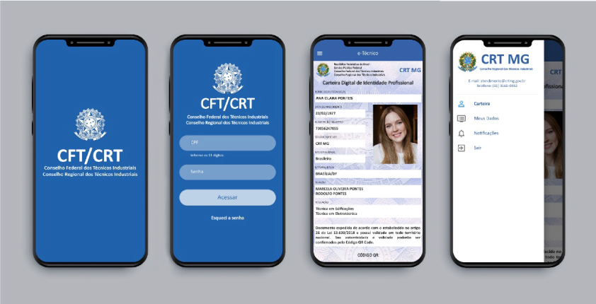
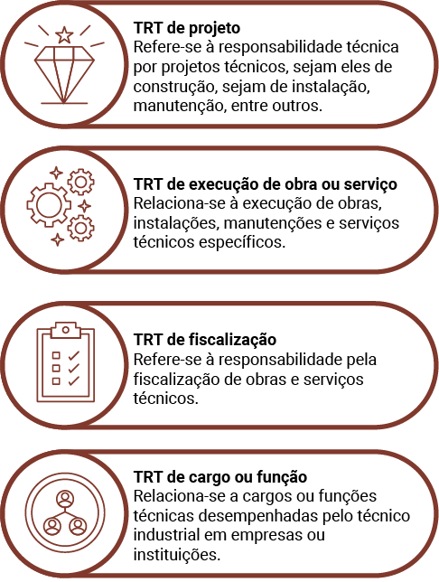
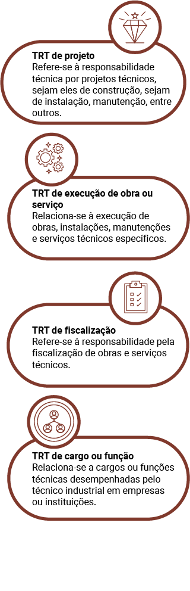

Todo profissional tem um limite na sua atuação. Limite de atuação refere-se às restrições legais e regulamentares que definem o escopo das atividades permitidas a um designer de interiores. Essas restrições são estabelecidas para assegurar a segurança, qualidade e conformidade dos projetos de design com as normas técnicas e os códigos da construção civil.
Os designers de interiores precisam compreender e trabalhar dentro desses limites, garantindo que suas propostas e implementações estejam em conformidade com as leis e os regulamentos aplicáveis. Por vezes, haverá projetos em que você precisará da colaboração de outros profissionais, como arquitetos e engenheiros, especialmente em projetos que envolvem modificações estruturais ou sistemas elétricos e hidráulicos.
Designer de interiores trabalhando
Fotografia de homem branco em um escritório, de frente para um computador com duas telas, projetando um ambiente de design de interiores.
Compreender a importância do limite de atuação para o profissional da área é essencial, pois isso protege o designer de interiores de responsabilidades legais que possam surgir ao trabalhar fora de seu escopo de competência e assegura a confiança dos clientes, ao garantir que os projetos seguirão padrões de qualidade e segurança.
Além disso, o entendimento claro desses limites promove a valorização e o reconhecimento da profissão, destacando a importância de cada especialidade dentro do processo de design e construção.
Neste material, será abordada a função das associações e dos conselhos profissionais no mundo da construção civil. Serão exploradas também as definições dessas entidades e identificados os principais órgãos vinculados à profissão de designer de interiores. Que tal começar?
Associações profissionais são entidades criadas para representar, apoiar e promover os interesses de seus membros, que compartilham a mesma profissão ou área de atuação. No caso do design de interiores, essas associações reúnem designers de interiores, estudantes, empresas e outros profissionais relacionados ao setor. Por meio de networking, elas facilitam a criação de uma rede de contatos profissionais, o que pode levar a novas oportunidades de negócios, colaborações e parcerias.
As principais funções das associações profissionais incluem a oferta de programas de certificação, por meio de cursos de educação continuada, como workshops, seminários e conferências, para manter os profissionais atualizados sobre as últimas tendências, tecnologias e melhores práticas do mercado. Elas estabelecem normas e diretrizes que regulamentam a prática profissional, assegurando que os designers sigam padrões éticos e técnicos elevados.
Além disso, as associações oferecem suporte contínuo aos profissionais, disponibilizando recursos que ajudam no desenvolvimento de suas carreiras e seus negócios, e promovem o reconhecimento e o respeito pelo trabalho dos designers, ajudando a elevar o status e a percepção pública da profissão.
Essas entidades produzem e distribuem publicações como revistas, boletins informativos, estudos de caso e relatórios de pesquisa, que fornecem informações importantes sobre o mercado e a prática profissional. Também organizam eventos, como feiras, exposições, premiações e concursos, para reconhecer e celebrar a excelência em projetos de design de interiores.
Outro papel importante das associações é atuar na defesa dos interesses dos designers de interiores junto a órgãos governamentais, reguladores e outras entidades, garantindo o reconhecimento e a valorização da profissão.
Alguns exemplos de associações profissionais são os seguintes:
A Associação Brasileira de Designers de Interiores (ABD) é uma organização sem fins lucrativos dedicada a representar e apoiar os profissionais de design de interiores no Brasil. Fundada em 1980, a ABD tem como objetivo promover a valorização e o reconhecimento da profissão de designer de interiores, além de oferecer recursos e oportunidades de desenvolvimento para seus membros.
Logo da ABD
Fonte: ABD (c2021a)
A International Interior Design Association (IIDA) é uma organização global que representa a comunidade de design de interiores. Fundada em 1994, a IIDA tem como objetivo principal apoiar os profissionais da área, promover a excelência no design de interiores e melhorar a qualidade de vida por meio do design.
Logo da IIDA
Fonte: IIDA (s. d.)
Os conselhos profissionais são órgãos colegiados incumbidos de regulamentar e fiscalizar profissões que contêm regulamentação legal. Constituídos de profissionais da respectiva área, têm como principal objetivo garantir que a prática profissional obedeça aos padrões éticos, técnicos e legais estabelecidos. Esses conselhos realizam o registro e a inscrição de profissionais e empresas que exercem a profissão regulamentada, habilitando-os a atuar de maneira legal.
Na fiscalização do exercício da profissão, os conselhos asseguram que as práticas profissionais estejam em conformidade com os padrões éticos e técnicos. Para isso, realizam visitas a locais de trabalho, analisam denúncias e investigam irregularidades. Eles também estabelecem normas e regulamentos que disciplinam a prática profissional, como a criação de códigos de ética, resoluções e outras normativas que orientam a atuação dos profissionais.
Além de protegerem a sociedade contra a prática ilegal ou antiética das profissões regulamentadas, os conselhos garantem que os serviços prestados atendam aos padrões de qualidade e segurança. Eles têm a autoridade para aplicar sanções administrativas aos profissionais que descumprirem as normas e os regulamentos estabelecidos, as quais podem variar de advertências até a cassação do registro profissional.
Finalmente, os conselhos asseguram que apenas profissionais devidamente habilitados e qualificados possam exercer a profissão, prevenindo a concorrência desleal e a prática ilegal da profissão.
Técnicos em design de interiores são responsáveis por auxiliar na elaboração e execução de projetos de design de interiores, integrando habilidades criativas e conhecimentos técnicos. Para se tornar um técnico em design de interiores, é necessário concluir um curso técnico na área, que proporciona uma formação prática e teórica sobre os princípios do design, técnicas de desenho, ergonomia, materiais, iluminação e aplicação de normas técnicas.
A certificação profissional pode ser obtida por meio de entidades reguladoras e associações profissionais, que garantem a qualificação e a aptidão do técnico para atuar na área. O Conselho Federal dos Técnicos Industriais (CFT) regula e fiscaliza a atuação dos profissionais técnicos em design de interiores, assegurando a qualidade e a ética no exercício da profissão.
O Termo de Responsabilidade Técnica (TRT) do CFT é um documento essencial para a formalização e regulamentação dos serviços técnicos dos designers de interiores. Ele garante a responsabilidade técnica, a qualidade dos serviços e oferece segurança jurídica tanto para os profissionais quanto para os contratantes, sendo um instrumento fundamental na valorização e fiscalização das profissões regulamentadas pelo CFT.
Incorporar práticas de segurança e sustentabilidade é essencial no design de interiores, alinhando os projetos com as tendências globais e exigências legais. Em casos de problemas técnicos, disputas legais ou acidentes, o TRT serve como documento comprobatório da responsabilidade técnica, podendo ser utilizado como prova em processos judiciais.
Além disso, o técnico deve estar familiarizado com as normas técnicas e regulamentações, como a NBR 16280:2024, que impactam diretamente o planejamento e a execução de reformas e projetos de interiores. Trabalhar em estreita colaboração com clientes, arquitetos, engenheiros e outros profissionais do setor é uma parte significativa do trabalho, garantindo a integração de diferentes áreas de conhecimento para a realização de projetos bem-sucedidos.
Conheça a seguir três importantes conselhos e sua função:
O Conselho Regional de Engenharia e Agronomia (CREA) é uma entidade de classe encarregada de fiscalizar e regulamentar o exercício das profissões de engenharia, agronomia e tecnólogos. Ele é uma autarquia federal, uma entidade administrativa autônoma criada por lei para desempenhar funções típicas do estado. Cada estado brasileiro tem seu próprio CREA, supervisionado pelo Conselho Federal de Engenharia e Agronomia (Confea).
As principais profissões regulamentadas pelo CREA incluem engenharias civil, mecânica, elétrica, de produção, química, ambiental, de computação, de agrimensura e cartografia e engenharia de alimentos; agronomia, geologia, tecnologia em construção civil e tecnologia em design de interiores, entre outras.
O papel do CREA é fundamental para assegurar que as profissões relacionadas à engenharia, agronomia e áreas afins sejam exercidas de maneira responsável, segura e ética. Ao fiscalizar e regulamentar essas profissões, o CREA garante que os serviços prestados por seus profissionais atendam aos padrões de qualidade e segurança exigidos, protegendo tanto os profissionais quanto a sociedade.
A Anotação de Responsabilidade Técnica (ART) é um registro que formaliza a responsabilidade técnica de um profissional de engenharia, agronomia, geologia, geografia, meteorologia ou áreas correlatas sobre um serviço ou uma obra específica. Esse documento legal estabelece a relação entre o profissional, o contratante e o CREA, detalhando o escopo dos trabalhos a serem realizados, garantindo a formalização e a transparência das responsabilidades envolvidas no projeto.
O Conselho de Arquitetura e Urbanismo (CAU) é a entidade responsável por regular e fiscalizar o exercício profissional da arquitetura e urbanismo no Brasil. Criado para proporcionar maior autonomia e especificidade à profissão, que anteriormente era regulada pelo CREA, o CAU desempenha um papel importante na garantia da qualidade e ética na prática da arquitetura e urbanismo.
O CAU pode reconhecer e regulamentar especializações e áreas de atuação dentro da arquitetura e urbanismo, assegurando que os profissionais sigam normas técnicas, éticas e legais. O conselho é responsável por emitir a carteira profissional, fiscalizar o exercício da profissão, oferecer suporte aos profissionais registrados e defender os interesses da sociedade em relação ao ambiente construído.
O Registro de Responsabilidade Técnica (RRT) é um documento específico para os profissionais registrados no CAU, semelhante à ART, do CREA. O RRT formaliza a responsabilidade técnica dos arquitetos e urbanistas sobre projetos, obras e serviços de arquitetura e urbanismo, estabelecendo a relação entre o profissional, o contratante e o CAU, e detalhando o escopo dos trabalhos a serem realizados.
O Conselho Federal dos Técnicos Industriais (CFT) é uma autarquia federal encarregada de regular e fiscalizar o exercício profissional dos técnicos industriais no Brasil. Foi criado para proporcionar maior autonomia e representatividade aos técnicos industriais, que anteriormente eram regulamentados pelo CREA.
Entre as principais profissões regulamentadas pelo CFT estão técnicos em edificações, em eletrônica, em mecânica, em segurança do trabalho, em automação industrial, em química, em meio ambiente, em paisagismo e técnicos em design de interiores, entre outros.
Essas profissões são regulamentadas pelo CFT, que assegura a formação adequada dos profissionais, emite registros profissionais, fiscaliza o exercício da profissão e promove o desenvolvimento e a valorização das carreiras técnicas no Brasil.
Profissional com registro novo pode solicitar a carteira profissional física no site regional do CFT. O exercício livre da profissão de técnico industrial em todo o território nacional é permitido apenas para aqueles que têm a carteira profissional emitida pelo CFT.
A carteira de identidade profissional é a forma como o técnico se apresenta à sociedade, pois certifica que ele cumpre todos os requisitos legais, demonstra sua aprovação acadêmica que o habilita para o trabalho técnico e assegura que sua atuação está regulamentada e sob a fiscalização do Poder Público. A apresentação da carteira de identidade profissional a empresas, clientes ou outros contratantes de seus serviços proporciona transparência na atuação profissional e adiciona segurança à relação com o mercado.
Carteira profissional física | Conselho Regional dos Técnicos Industriais
Fonte: CRT-03 (2021)
Montagem com as fotografias do documento profissional emitido pelo Conselho Regional dos Técnicos Industriais (CRT-03) para um indivíduo identificado como PROFISSIONAL TESTE CRT-03.
A carteira profissional definitiva digital está disponível também pelo aplicativo e-Técnico CRT. Tanto a carteira digital quanto o aplicativo serão acessíveis gratuitamente para os técnicos que tiverem registro ativo no CFT.

Interface do aplicativo “e-Técnico”, do CFT
Fonte: CFT (2020)
Montagem com as telas da interface digital que corresponde a uma carteira digital de identidade profissional emitida por um Conselho Regional de Técnicos Industriais (CRT).
O QR code presente na carteira digital possibilita sua autenticação e o direcionamento aos dados do profissional no sistema do CFT, o Sistema de Informação dos Conselhos dos Técnicos Industriais (Sinceti). Entre as funcionalidades mais conhecidas do Sinceti estão o registro profissional CFT/CRT e a emissão do CAT (Certidão de Acervo Técnico), que certifica as atividades técnicas realizadas por um profissional, além da expedição do TRT (Termo de Responsabilidade Técnica).
O TRT é um documento emitido pelos profissionais registrados no CFT. Similar à Anotação de Responsabilidade Técnica (ART) do CREA e ao Registro de Responsabilidade Técnica (RRT) do CAU, o TRT formaliza a responsabilidade técnica dos técnicos industriais sobre projetos, obras e serviços. Ele estabelece a relação entre o profissional, o contratante e o CFT, detalhando o escopo dos trabalhos a serem realizados.
Confira no infográfico alguns tipos de TRT.
 Refere-se à responsabilidade técnica por projetos técnicos, sejam eles de construção, sejam de instalação, manutenção, entre outros.
Relaciona-se à execução de obras, instalações, manutenções e serviços técnicos específicos.
Refere-se à responsabilidade pela fiscalização de obras e serviços técnicos.
Relaciona-se a cargos ou funções técnicas desempenhadas pelo técnico industrial em empresas ou instituições.
Qual é a diferença entre o técnico em design de interiores e o tecnólogo em design de interiores?
| Técnico em Design de Interiores | Tecnólogo em Design de Interiores |
|---|---|
|
Formação e área de atuação Curso técnico (1200 horas) focado em aspectos práticos e operacionais do design de interiores, totalmente vinculado ao mercado de trabalho e ao dia a dia da profissão. |
Formação e área de atuação Curso de graduação (1600 horas) que oferece uma formação mais abrangente, com aprofundamento teórico. |
|
Responsabilidades e área de atuação Pode atuar na execução e implementação de projetos de design de interiores, incluindo a elaboração de leiautes e escolha de materiais e acabamentos. |
Responsabilidades e área de atuação Pode atuar na execução e implementação de projetos de design de interiores, incluindo a elaboração de leiautes e escolha de materiais e acabamentos. |
|
Habilitação e registro profissional Conselho Federal dos Técnicos Industriais (CFT) e emissão do Termo de Responsabilidade Técnica (TRT). |
Habilitação e registro profissional Conselho Regional de Engenharia e Agronomia (CREA) e emissão da Anotação de Responsabilidade Técnica (ART). |
|
Classificação Brasileira de Ocupações (CBO) – Ministério do trabalho CBO 3751 (Brasil, s. d.)
Descrição sumária |
Classificação Brasileira de Ocupações (CBO) – Ministério do trabalho CBO 2629 (ABD, c2021b)
Descrição sumária |
Esses dois cursos formam o profissional pleno, sendo formações continuadas.
A ABNT NBR 16280:2024 é uma norma da Associação Brasileira de Normas Técnicas (ABNT) que tem o objetivo de regulamentar e padronizar o processo de reformas, assegurando que sejam realizadas com segurança, qualidade e conformidade com as normas técnicas. A norma define um sistema de gestão necessário para reformas, abrangendo o controle de processos desde a elaboração do projeto até a execução e finalização da obra.
A norma recomenda a criação de um documento consolidado que inclua o projeto, memorial descritivo, escopo dos serviços a serem executados, cronograma da reforma, identificação da empresa e dos profissionais envolvidos, e registros de responsabilidade técnica, como TRT, RRT ou ART. Profissionais devidamente habilitados, como técnicos industriais, arquitetos ou engenheiros, devem ser responsáveis pela elaboração e execução do projeto de reforma, garantindo que todas as exigências técnicas e legais sejam atendidas.
A NBR 16280:2024 enfatiza a necessidade de garantir que as reformas não comprometam a segurança estrutural da edificação e estejam em conformidade com as normas técnicas e regulamentações locais. Também incluem diretrizes para a realização de ensaios e verificações durante e após a reforma, assegurando que os materiais e as técnicas empregados atendam aos padrões estabelecidos.
Além disso, a norma aborda o planejamento para o descarte de resíduos gerados durante a reforma, promovendo práticas sustentáveis e de gestão adequada dos resíduos. A aplicação dessa norma visa garantir a integridade das edificações, a segurança dos usuários e a qualidade das obras realizadas, promovendo um ambiente construído mais seguro e sustentável.
Afinal, como essa norma impacta a atuação do técnico em design de interiores?
A norma NBR 16280:2024 exige que reformas em edificações sejam conduzidas com a devida responsabilidade técnica, o que implica que o técnico em design de interiores respeite os limites de suas competências legais. Este profissional pode atuar em projetos de decoração e design de interiores, mas não pode assumir responsabilidades técnicas que envolvem alterações estruturais, sistemas elétricos ou hidráulicos sem a devida qualificação e registro profissional.
A Resolução CFT nº 96/2020 estabelece as diretrizes e obrigatoriedades para os técnicos em design de interiores no Brasil. Entre as principais exigências estão a obrigatoriedade do registro profissional perante o conselho regional e a emissão do TRT para cada projeto elaborado.
Qualquer reforma que envolva mudanças significativas na estrutura ou nos sistemas da edificação deve ser documentada e aprovada por profissionais habilitados, como engenheiros civis ou arquitetos, e pelos órgãos competentes. O técnico em design de interiores deve assegurar que todos os projetos estejam devidamente documentados e que todas as aprovações necessárias sejam obtidas antes de iniciar a execução.
Assim, o técnico em design de interiores preenche a TRT com detalhes sobre o serviço, projeto ou obra, incluindo informações sobre o contratante, o local, o prazo e a descrição das atividades. Se o designer identificar necessidades específicas do projeto de reforma que requeiram a expertise de um arquiteto ou engenheiro civil, ele pode propor parcerias com esses profissionais.
Essas parcerias devem ser baseadas na clareza das responsabilidades de cada profissional, respeitando as competências e atribuições de cada um. A formalização dessas parcerias pode ser feita por meio de contratos e da emissão de responsabilidade técnica por cada profissional em seu respectivo conselho, sendo a ART para engenheiros e o RRT para arquitetos.
O técnico em design de interiores deve garantir que essas responsabilidades estejam devidamente registradas, assegurando a conformidade legal e a segurança da obra. Além disso, deve trabalhar em estreita colaboração com arquitetos e engenheiros civis para assegurar que todas as alterações sejam realizadas de acordo com as normas técnicas e regulamentações vigentes, incluindo a NBR 16280:2024.
Confira nos quadrinhos a seguir um exemplo prático de associação profissional entre um designer e um engenheiro.
Página 1: o desafio
Quadrinho 1
Carlos, um talentoso designer de interiores, recebe um e-mail em seu laptop. O texto no e-mail diz: “Desafio: transformar antigo galpão industrial em moderno escritório de tecnologia”.
Legenda: Carlos, designer de interiores, acaba de receber uma missão: transformar um antigo galpão industrial em um espaço moderno para uma empresa de tecnologia.
Quadrinho 2
Carlos visita o galpão, com paredes de tijolos desgastados, tetos altos e grandes janelas sujas. Ele coloca as mãos nos quadris, olhando ao redor.
Legenda: O espaço é vasto, mas cheio de potencial.
Quadrinho 3
Carlos, de volta ao escritório, analisa plantas antigas do galpão. Ele pensa: “Vou precisar de ajuda para garantir que as modificações estruturais sejam seguras”.
Legenda: Para garantir a segurança das mudanças estruturais, Carlos busca parceria.
Página 2: a parceria
Quadrinho 1
Carlos está em uma sala de reunião, cumprimentando Marina, uma renomada engenheira civil. Ambos sorriem e apertam as mãos.
Legenda: Carlos encontra Marina, uma engenheira civil experiente, para discutir o projeto.
Quadrinho 2
Carlos e Marina sentados à mesa, rodeados por plantas e esboços. Carlos apresenta suas ideias de design: espaços abertos, áreas de colaboração, muita luz natural.
Marina: “Isso é incrível, mas teremos que reforçar a estrutura para suportar essas mudanças”.
Quadrinho 3
Marina, com uma expressão séria, revisa as plantas e faz cálculos em um caderno.
Legenda: Marina começa a trabalhar nos cálculos estruturais para viabilizar o projeto.
Quadrinho 4
Marina sugere o uso de vigas de aço reforçadas e aponta para os locais onde novas janelas podem ser instaladas, sobrepondo as plantas com novas marcações.
Marina: “Com essas vigas de aço, poderemos abrir as janelas que você quer, sem comprometer a estrutura”.
Página 3: o progresso
Quadrinho 1
Carlos e Marina estão em um canteiro de obras. Carlos gesticula para um operário que está erguendo uma das vigas de aço.
Legenda: A obra começa a tomar forma, com a estrutura se fortalecendo graças ao trabalho de Marina.
Quadrinho 2
Carlos está em seu estúdio refinando o design no computador quando recebe uma mensagem de Marina: “Tudo conforme o planejado!”
Legenda: A comunicação constante entre Carlos e Marina garante que o design e a estrutura se complementem perfeitamente.
Quadrinho 3
Marina está resolvendo um imprevisto: uma tubulação antiga foi descoberta durante as obras. Ela está ao telefone com Carlos, explicando como vai ajustar o plano sem comprometer a visão de design.
Marina: “Não se preocupe, já resolvi. Vamos manter o leiaute que você queria”.
Quadrinho 4
Carlos sorri aliviado, ajustando alguns detalhes no design para acomodar as novas mudanças.
Legenda: Carlos ajusta o design, mantendo a harmonia entre forma e função.
Página 4: a transformação
Quadrinho 1
O galpão está transformado agora em um escritório moderno e iluminado, com espaços abertos, plantas, móveis contemporâneos e grandes janelas que deixam entrar muita luz natural.
Legenda: O galpão foi transformado em um escritório funcional e impressionante.
Quadrinho 2
Carlos e Marina estão lado a lado, observando o resultado final com sorrisos satisfeitos.
Legenda: A colaboração entre Carlos e Marina resultou em um projeto bem-sucedido.
Quadrinho 3
O cliente, impressionado, cumprimenta Carlos e Marina.
Cliente: “Isso superou todas as nossas expectativas!”
Quadrinho 4
Carlos e Marina se despedem com um aperto de mão firme.
Legenda: O projeto não só fortaleceu o respeito mútuo, mas também destacou a importância da cooperação entre diferentes áreas de especialização.
Fim
Dica: A ABD e a ABENC criaram o programa Engenheiro Amigo do Designer a fim de incentivar a parceria entre designers de interiores e engenheiros civis. Para encontrar mais informações sobre esse programa, pesquise no site da ABD e saiba mais.
Entender os limites de atuação profissional e reconhecer as associações e os conselhos profissionais é muito importante para os técnicos em design de interiores. Isso garante a qualidade e a segurança dos projetos, assegura a conformidade legal e proporciona suporte, orientação e oportunidades de desenvolvimento profissional. Além disso, confere credibilidade e validação, essenciais para o reconhecimento e sucesso na carreira.
Estar associado a entidades de classe profissional não apenas aumenta a credibilidade e as oportunidades de desenvolvimento profissional, mas também assegura que o técnico esteja sempre alinhado com as melhores práticas e regulamentações do setor. Isso significa também estar atualizado sobre normas técnicas, participar de treinamentos e eventos e ter acesso a uma rede de profissionais e recursos que podem enriquecer sua prática e ampliar suas perspectivas de atuação.
Quanta informação importante, não é mesmo?
Que você se sinta apto e seguro durante sua trajetória. Bons projetos e parcerias profissionais, futuro designer!